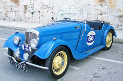

Special or Modal auxiliary verbs
This is a complicated area but this is a simple grammar. We will not cover all of these verbs and their meanings. The following looks at the most common and simple modal auxiliary verbs only.
 |
Modal auxiliary verbs express how we feel about something |
They express 5 main ideas and there are 6 common ones.
The 5 ideas modal auxiliary verbs express are:
- possibility and logical certainty:
Do you think it will happen or has happened?
How sure are you? - willingness and promises:
Do you want to do something? - ability:
Are you able to do something? - obligation, permission and prohibition:
Are you forced to do something?
Are you allowed to do something?
Are you forbidden to do something? - suggestions and advice:
Is it a good idea to do something?
The six modal auxiliary verbs in this grammar are:
- can / could / be able to
- must / have to
- will / would
- shall / should
- may / might
- ought to
There are some more modal auxiliary verbs but these are the most important.
|  | Why are these verbs special? |
- The grammar is different.
- Most verbs make a question by adding do, did or
does (for example: Did you see him?, Does he live here?
etc.). These verbs do not. With modal
auxiliary verbs
we just put the verb before the subject. For example:
You can see it → Can you see it?
I must go → Must you go?
etc. - Most verbs take an -s at the end with he,
she and it in the present tense (for example: He goes, It
rains, She smokes). These verbs do not:
I can go
He must go
They can't go
She ought to go
Everybody should go - Most verbs make a negative with do, did or does
(for example: I don't understand, She didn't arrive).
These verbs do not. With modal auxiliary verbs we just put not
after the verb. For example:
I must not go
She should not go
We could not go
- Most verbs make a question by adding do, did or
does (for example: Did you see him?, Does he live here?
etc.). These verbs do not. With modal
auxiliary verbs
we just put the verb before the subject. For example:
- The meaning of these verbs can only be seen
when they are with a main verb. For example, we can
understand
They smoke
She arrived
She must come
You can't help
etc.
but we cannot understand
They could
She must
We can
 |
Some common modal auxiliary verbs explained |
can / could (and be able to)He can read English well. |
This verb is used for:
- Ability:
He can read German but can't speak it well
He could play the piano well as a child
He was able to speak Italian when he was 6 - Permission (present and future):
Can I come in?
No, you can't
Could I talk to you tomorrow?
be able to is not used for permission - Possibility and impossibility:
Nobody can be sure
The train could be late
She can't be so silly!
be able to is not used to talk about possibility
The expression be able to is not a modal auxiliary verb in English. It is just an adjective (able) connected to the subject by the verb be, so it can be used in any tense and makes questions and negative statements in the normal way.
 |
may / mightYou may not park here! |
This verb is used for:
- Permission:
You may ask a question now
May I smoke here?
You may not leave before 6 - Possibility and impossibility (present and future):
We may arrive a little late
He might come early
Might he be late?
I might not arrive on time
 |
shall / shouldShall we take the dogs for a walk? |
This verb is used for:
- To make questions:
Shall I do my homework now? - To make suggestions:
Shall we go?
Should is much more common and can express:
- Obligation:
You should write to your mother more often - Logical certainty:
He should be there by now
Notice that the negative of He should be there by now is He can't be there yet. - Advice:
You should take something for your cold
 |
will / wouldWould you like milk? |
This verb is used for:
- Willingness:
I'll get the milk
Will you have another biscuit? - Offers (would only):
Would you like some cake?
Would you enjoy a little music? - Intention or a promise:
I'll send you an email soon
He told me he would write soon - Possibility and certainty:
It'll probably rain soon; it often does in November
He knew it would rain
He believed I would come
must / have toYou must not say that! |
This verb is used for:
- Obligation:
You mustn't speak to me like that
You must be home at 6 - Logical necessity / deduction:
That must be his father
There must be an error in the data
Making the negative of must is not easy. For example,
with
You must take the medicine every day
The negative can be
- You mustn't take the medicine every day
(i.e., you are obliged not to)
or - You don't have to take the medicine every day (but you can if you want to)
and with:
The figure must be correct
The negative can be
- The figure mustn't be correct (i.e., you must give the wrong
figure)
or - The figure can't be correct (i.e., there is clearly a mistake here)
 |
ought toShe ought to be in bed. |
This verb is used for:
- Obligation (weaker than must):
She ought to ask if she doesn't know - Logical deduction / expectation:
The bus ought to be here by now
 |
Time and tense |
Only some modal auxiliary verbs have past-tense forms. Here's a list.
| Present | Past |
| can | could |
| may | could / might |
| shall | should |
| will | would |
| must | had to |
| ought to | ---- |
The past of may
may has two past forms. One for possibility, one
for permission. We can say
I could ask questions
(permission: I was allowed to ask questions)
and
I
might ask questions
(possibility: it is possible that I will ask questions)
The past of must
is usually had to.
I must go tomorrow →
I had to go yesterday
I must do it now →
I had to do it then
Click here to take a short test on modal auxiliary verbs and their meanings.